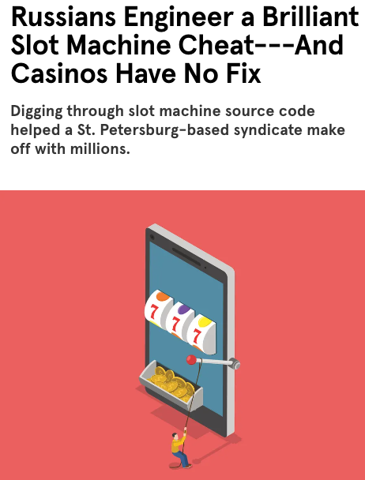
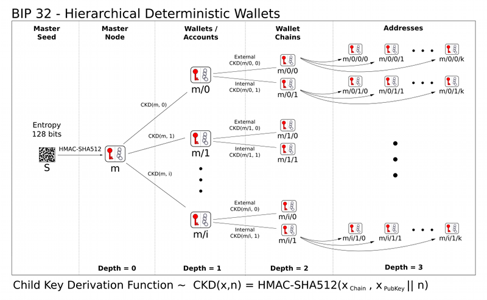
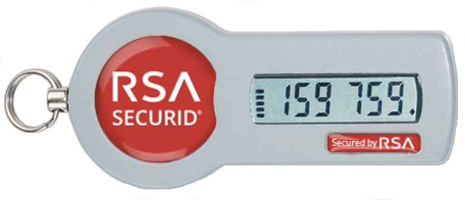
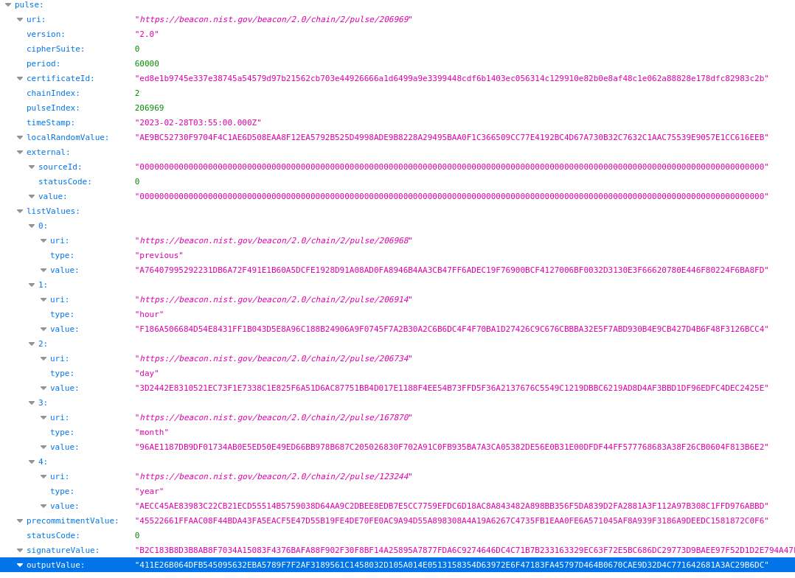

{kind=link}
!xxd -u -l 32 -p /dev/urandom390BA3910B0F66CDC4F67F17DC7CAB64BA503B98E842BF8037CE2659A0E0
3F94Question. Write down a random number between 1 and 4.
Homeworks in this course have a short grace period of between 2 hours and 2 days.
For each week, the grace period is determined by a random number.
The Interoperable Randomness Beacons project at NIST intends to promote the availability of trusted public randomness as a public utility. (source)
The NIST interoperable randomness beacon produces a new random number every minute. To determine the grace period, look at the most recent outputValue at 10am on the morning of the due date.
First hex character in outputValue |
Grace period | Typical late deadline (in US eastern time) |
|---|---|---|
0, 1, 2, 3 |
2 hours | Wednesday 10pm |
4, 5, 6, 7, 8, 9, A, B |
26 hours | Thursday 10pm |
C, D, E, F |
50 hours | Friday 10pm |
The “typical late deadline” assumes that homework is due on Wednesday at 8pm. If any homework has a different due date/time, then calculate the grace period from that.
To determine the Homework 1 grace period: here is the link for the random number on Sept 16 at 10am.
By the end of today’s lecture, you will learn:

A message commitment protocol is the digital version of placing a written message \(m\) inside of an envelope. It has two methods:
Commit\((m, r)\) is the digital version of placing the message \(m\) in an envelopeOpen\((c, m, r)\) is the digital version of opening the envelope to reveal \(m\)These algorithms satisfy two security requirements:
Commit step, everyone knows that the message cannot be changedOpen stepWe can construct message commitment using a hash function \(H\).
Commit\((m, r)\): committer sends \(c = H(m, r)\)Open\((c, m, r)\): committer sends \(m\) and \(r\), and receiver checks whether \(c \overset{?}{=} H(m, r)\)Let’s examine the importance of \(r\) to the commitment scheme:
\[\text{Randomness of } r \Rightarrow \text{Unpredictability of } c \Rightarrow \text{Secrecy of } m\]

This will be a common theme in this course: using randomness for secrets and key material leads to outcomes that Mallory cannot predict or use to recover secret information.
This is how we design many cryptographic protocols to satisfy Kerckhoffs’s principle #2.
It should not require secrecy, and it should not be a problem if it falls into enemy hands
Rather than hiding the code of the algorithm, we instead hide a short, random string.
Question. Which of the following strings is the most random and unpredictable?
111111110101010110100011We do not deem any single string (e.g., 0110100110) to be pseudorandom or not. Instead, we study the process by which a distribution over strings is produced.
Interactive question. Which number did you write down at the start of class?
Let’s see what can happen when a computer’s source of randomness isn’t actually random.

“The only odd thing about his behavior during his streaks was the way he’d hover his finger above the Spin button for long stretches before finally jabbing it in haste; typical slots players don’t pause between spins like that. … the operatives use their phones to record about two dozen spins on a game they aim to cheat. They upload that footage to a technical staff in St. Petersburg, who analyze the video and calculate the machine’s pattern based on what they know about the model’s pseudorandom number generator. Finally, the St. Petersburg team transmits a list of timing markers to a custom app on the operative’s phone; those markers cause the handset to vibrate roughly 0.25 seconds before the operative should press the spin button.” – Wired

“Prosecutors say they have unearthed forensic evidence that shows how a former computer security official for a US state lottery association let him rig drawings worth millions of dollars across five states using unauthorized code that tampered with a random number generator used to pick winning tickets. … A forensic examination found that the generator had code … that directed the generator not to produce random numbers on three particular days of the year if two other conditions were met. Numbers on those days would be drawn by an algorithm that [the computer security official] could predict.” – ArsTechnica
Second, bad randomness can lead to easily-guessable cryptographic keys, which are supposed to be random bytestrings sampled from a large space (e.g., 256 bits).
The software engineers of Debian Linux made this mistake from 2006 to 2008, and many Internet-of-Things embedded devices don’t properly generate random numbers.
“Luciano Bello discovered that the random number generator in Debian’s openssl package is predictable. This is caused by an incorrect Debian-specific change to the openssl package. As a result, cryptographic key material may be guessable.” – Debian Linux
“We perform the largest ever network survey of TLS and SSH servers and present evidence that vulnerable keys are surprisingly widespread. We find that 0.75% of TLS certificates share keys due to insufficient entropy during key generation, and we suspect that another 1.70% come from the same faulty implementations and may be susceptible to compromise. Even more alarmingly, we are able to obtain RSA private keys for 0.50% of TLS hosts and 0.03% of SSH hosts, because their public keys shared nontrivial common factors due to entropy problems, and DSA private keys for 1.03% of SSH hosts, because of insufficient signature randomness.” – Heninger, Durumeric, Wustrow, Halderman 2012
Have you ever wondered how your computer generates random numbers?
This is not a trick question; computers do have the ability to generate truly random numbers. For instance, on a Unix-like operating system (e.g., Linux, MacOS, BSD) you can request random data by fetching from a special file called /dev/urandom.
It is not really a file, but rather an operating system service that will create random data as often as you need, whenever you request it. You can treat /dev/urandom as if it is a file, and read from it whenever you want.
Here is an example: the terminal command below reads 32 bytes of data from /dev/urandom and prints the result in hexadecimal format.
!xxd -u -l 32 -p /dev/urandom390BA3910B0F66CDC4F67F17DC7CAB64BA503B98E842BF8037CE2659A0E0
3F94If I run this exact line of code again in the terminal, I will get a different – and hopefully unpredictable – response.
!xxd -u -l 32 -p /dev/urandomC7C4E4F05C729108303755AB9EDD7C548E859111F926F1E1B151BFD1ED78
1E06Question. If you were designing the computer hardware and operating system, how would you generate random numbers?
“Fortunately, it’s not hard to harvest truly unpredictable randomness by tapping the chaotic universe that surrounds a computer’s orderly, deterministic world of 1s and 0s.” – Taylor and Cox, IEEE Spectrum magazine
Modern computers follow a three-step process to generate randomness:
To harvest: your laptop and phone have many sensors that can capture random-looking noise.
The extract step essentially involves computing a cryptographic hash of all harvested data. (Extraction is actually more complicated than this, in order to be safe even if the adversary Mallory controls some of your sensors, but this is the main idea.)
We will spend the rest of today’s class on the expand step.
There are many situations in this course where we will want a deterministic procedure to generate random-looking data.
Interactive question. Which is the only scenario that does not benefit from a deterministic procedure to generate random-looking data?
We want a process that Alice can use to reliably and deterministically produce many secret strings, but also one that “looks random” to an outsider (who does not know the underlying seed).
Question. Is there anything in our cryptographic toolbox that allows us to do this?
A cryptographic hash function \(H\) provides this kind of property.
Suppose we have one single main seed \(m\) that we ask Alice to memorize. She can use it to generate many secrets pseudorandomly \[H(m, 0), H(m, 1), H(m, 2), \ldots\]
This idea is effective thanks to the properties of the underlying hash function.
Because \(H\) is preimage resistant, even if one secret (say, \(H(m, 2)\)) happens to be revealed to the world, nobody can use it to reverse-engineer the main seed \(m\)
Because \(H\) acts like a random oracle, the rows of the truth table of \(H\) appear to be independent, so no two secrets have any discernible connection to each other
The actual function you need to run here is not quite \(H\), but rather a slightly more complicated construction called HMAC applied to the hash function. We will discuss HMAC in the next lecture.
We will use the idea of pseudorandomness extensively throughout this course. Here are a few examples.
Cryptocurrencies use this idea in a protocol called hierarchical deterministic wallets, which allow for creating many keys for different cryptocurrencies like Bitcoin, Ethereum, ZCash, and more.
With HD wallets, you only have to remember the main seed \(m\), from which you can (re)generate as many secret keys for as many cryptocurrencies as you want.

Pseudorandomness is also crucial in smartphone applications for two-factor authentication like Authy, Duo, and Google Authenticator.

One note: while hash functions have a fixed output length by definition, SHA-3’s sponge function design is actually more flexible than this. It can:
In applications involving pseudorandomness, it can be beneficial for the output length to be larger than the input length.

Suppose that Alice and Bob want to eat dinner together, but they each prefer a different restaurant.
In the physical world, any set of \(n\) people can resolve this dilemma by tossing a coin. From a security perspective, a coin toss observed by \(n\) people has some nice features.
If all \(n\) parties are colluding together, then they can break these properties since they could just set the coin to be the value that they all like. But in this case, there is no honest party remaining to protect.
Interactive question. Now suppose Alice and Bob are in their own dorm rooms. Can they resolve this dilemma in the digital world using either a random number generator or pseudorandom generator?
Either Alice or Bob could run a random number generator on their own computer, but then they can lie when sharing the result with the other person.
Doing a video Zoom call over the Internet also does not work, since the person who flips the coin could:
So the question remains: how can we build a protocol that people can use to “toss a coin” over the Internet?
One way we can agree about common randomness is to ask a trusted source. As long as the source is trustworthy and won’t collude with the attacker, then we should be okay.
This is exactly what NIST Interoperable Randomness Beacon does. Since September 5, 2013, the US National Institute of Standards and Technology (NIST) has been publishing a 512-bit, full-entropy random number every minute of every day.
Each new post is called a pulse. Three independent different sources of randomness (and the previous pulse) feed entropy into each new pulse.
The pulse contains several fields:
outputValue: the random value that should be usedtimestamp: the time that this randomness has been generatedsignatureValue: a digital signature of the random output value, using the secret key of NIST with RSA-2048 (we will discuss what this means next week)listValues: pointers to the pulses from one minute, hour, day, month, and year ago (i.e., a skiplist)Here is a link to the full NIST specifications.

Next, let’s try to build a common coin between two parties Alice and Bob, but this time without relying on a trusted third party.
Remember that limiting trust is a common theme of this course!
“Cryptography is how people get things done when they need one another, don’t fully trust one another, and have adversaries actively trying to screw things up.”
– Ben Adida
In all the topics we explore in this class: we want to lessen our dependency on trusted outsiders, and to the extent that we do require the assistance of others, we want to be able to understand exactly who we are relying upon, and for what.
Here is a protocol based on the idea that both Alice and Bob should flip a coin locally, reveal their results, and see if the coins are equal or different. Both parties must commit to their local coin toss before either one is revealed.
Here is the protocol:
Both parties output \(b\) xor \(b'\).
The xor operation has the nice property that its result is uniformly random if either one of Alice or Bob honestly chooses their input at random, even if the other party is dishonest and does not follow the rules. Do you see why?
Example. Let’s try to run this protocol together right now. I will play the role of Alice, and you play the role of Bob.
For step 1 of the protocol: here is the hash of a value I personally committed to previously: 59047922b560c7bdcb6178974ae43cc8feb874662195f304c2365a5b60e48991
Next, Bob (you) selects a bit 0 or 1 and sends a commitment.
Then, I as Alice need to reveal my bit and salt.
import hashlib
b = b"1"
r = b"this is supposed to be a random bytestring"
print(hashlib.sha256(b + r).hexdigest())59047922b560c7bdcb6178974ae43cc8feb874662195f304c2365a5b60e48991Finally, you as Bob should open your own commitment.
Question. Is this a good two-party coin tossing protocol?
Let’s investigate this from the perspective of each party. First, can Alice bias the result of the two-party coin toss?
If she completes the protocol in a way that Bob’s verification check is successful, then no! The first step is a binding commitment to Alice’s bit \(b\). Due to collision resistance, there is only one opening that Alice knows.
Alice could refuse to complete the protocol, in which case we have no output. The only good news here is that Alice has not learned anything: she committed to her random value and cannot change it before seeing Bob’s value.
Second, can Bob bias the result of the two-party coin toss?
Bob is bound by his own commitment \(c'\). There is only one opening \(b'\) that Bob can provide in step 4 that will pass Alice’s check.
However, note that Bob knows the result of the coin toss after step 3, whereas Alice will not learn it until step 4.
So Bob can run a sneaky attack called selective failure: if Bob realizes the result of the coin toss is bad for him, then he can refuse to complete the protocol!
In this way, a malicious Bob can bias the coin toss. So if Alice and Bob use this protocol for secure coin tossing over the telephone or internet, it is crucial for Alice not to play again if Bob refuses to reveal \(b'\).
It turns out that if two people communicate over the Internet, it is impossible to build a coin tossing protocol that is fair (i.e., has no bias). The good news is:
{kind=link}